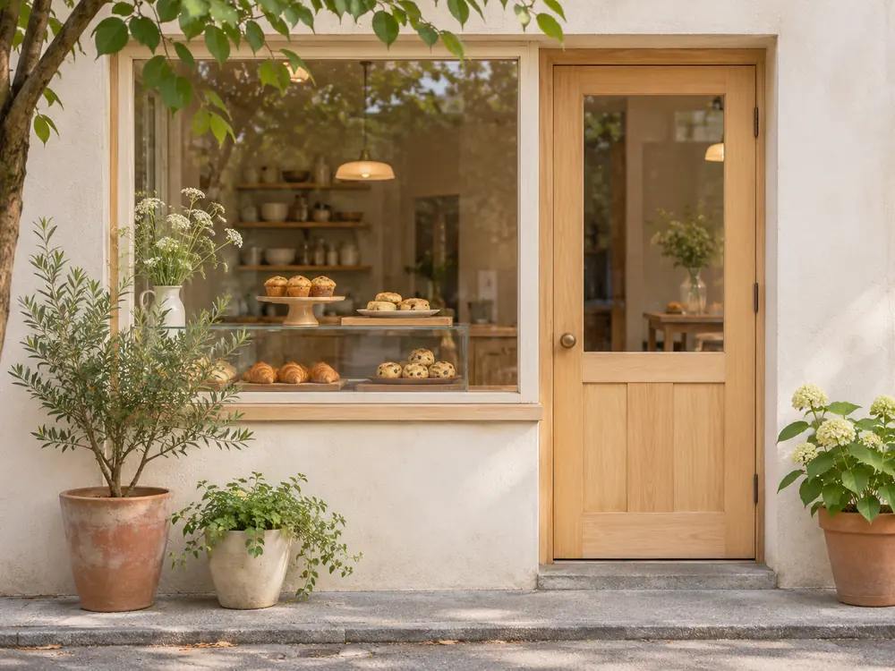

ACCESS
アクセス・営業日
駅からお店までの道と、営業日です。
見本用の簡単な図です（実際のご依頼では、地図アプリの地図を載せることもできます）。
お店の場所
- 住所
- 〇〇市〇〇町 1-2-3（見本用の架空の住所）
- 電話
- 00-0000-0000（見本用の架空の番号）
- 行き方
- 〇〇駅の北口から、商店街をまっすぐ歩いて5分。木の扉と鉢植えが目印です。
- 駐車場
- ありません。自転車は2台までとめられます。
営業日と時間
| 月 | お休み |
|---|---|
| 火 | お休み |
| 水 | 10:00〜18:00 |
| 木 | 10:00〜18:00 |
| 金 | 10:00〜18:00 |
| 土 | 9:00〜17:00 |
| 日 | 9:00〜17:00 |
- 売り切れしだい閉店します。
- 祝日は営業します（11月23日はお休み）。
- 営業日の変更は、お知らせと Instagram でお知らせします。
